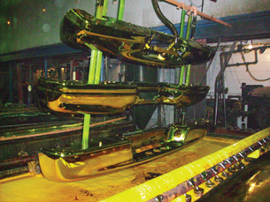
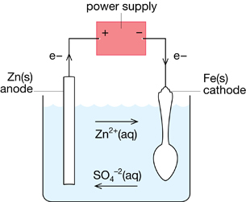

Module 4—Batteries and Balance
 Explore
Explore
 Read
Read
The development of electric cells was essential to experimentation using electrolytic cells. To learn more about this relationship and how electrolysis can be used to produce elements, read pages 646–647 in the textbook. Stop reading when you get to the end of “Communication example 3” on page 647.
The reading introduces an important aspect of the electrolysis of weak oxidizing agents like the ions of group I metals. Because water is a stronger oxidizing agent than Na+(aq), K+(aq), and Li+(aq) the production of metals in group I can only be achieved in molten conditions. You will recall that ionic compounds also tend to have high melting temperatures, normally well above the boiling point of water. When molten, ionic compounds such as NaCl(l) act as an electrolyte because ions are free to move. As you have already learned in this module, the movement of ions is essential for the conservation of charge in both electric and electrolytic cells.
Read “Production of Aluminium” on pages 647–648 in the textbook to see how an electrolytic cell containing molten contents is designed and operated. Then read “The Chlor-Alkali Process” on page 648 to learn how chlorine is produced at an industrial scale in a facility such as Dow Chemical in Fort Saskatchewan, Alberta.
In Unit C of this course you will learn how chlorine produced by the chlor-alkalai process can be used in chemical reactions with hydrocarbons to make plastics. The partnering of industrial processes like the chlor-alkali process with the refining of petroleum is an important part of Alberta’s petrochemical industry.
 Self-Check
Self-Check
SC 1. Complete “Practice” questions 16–18 and 21 on page 649 of the textbook.
Self-Check Answers
Contact your teacher if your answers vary significantly from the answers provided here.
SC 1.
Practice 16.
From an aqueous solution, trying to reduce a metal ion (which is a weaker oxidizing agent than water) is futile. When water is the strongest oxidizing agent present, it will be reduced and the metal ion will remain unchanged in the solution. Also, many ionic compounds have low solubility in water, which makes it impractical to electrolyze an aqueous solution to obtain a metal. The technological solution is to conduct the electrolysis in the absence of water; which is possible by melting the ionic compound.
Practice 17.
cathode: 2[Sc3+(l) + 3 e– → Sc(s)]
anode: 3[2 Cl–(l) → Cl2(g) + 2 e–]
net cell: 2 Sc3+(l) + 3 Cl–(l) → 2 Sc(s) + 3 Cl2(g)
Practice 18.
cathode: 2 H2O(l) + 2e– → H2(g) + 2 OH–(aq)
anode: 2 Cl–(aq) → Cl2(g) + 2e–
net cell: 2 H2O(l) + 2 Cl–(aq) → H2(g) + 2 OH–(aq) + Cl2(g)
Practice 21.
Recycling aluminium has many benefits. To recycle an aluminium can, it takes only 5% of the energy required to produce a new one. Because every method for producing electrical energy has negative consequences, this energy saving reduces the aluminium industry’s impact on the environment. Recycling aluminium also saves bauxite, the mineral from which aluminium is obtained. This preserves bauxite for future generations. Recycling also reduces the amount of waste going into landfills.
Read

Electrolytic cells can also be used to refine metals. Read “Refining of Metals” on pages 649–650 of the textbook.
Many people have been attracted to the glowing chrome on classic and customized automobiles. The process of placing chromium over the steel used to construct bumpers and other parts of a car’s body is called electroplating.
 Watch and Listen
Watch and Listen
View the virtual investigation “Electroplating Copper.” This investigation is a laboratory-scale example of electroplating.
TR 1. As you view the investigation, record qualitative and quantitative data observed.
Save a copy of the data in your course folder. You will use the data in Lesson 5 to complete an analysis of this investigation.
 Try This
Try This
The following questions are based on the virtual investigation you just completed, “Electroplating Copper.”
TR 2. Describe any changes that occurred at the carbon electrode.
TR 3. Describe any changes that occurred at the copper electrode.
TR 4. Identify the evidence that indicates a reduction half-reaction occurred during the operation of the electrolytic cell. Write the half-reaction that describes this reaction.
TR 5. Identify the evidence that indicates an oxidation half-reaction occurred during the operation of the electrolytic cell. Write the half-reaction that describes this reaction.
TR 6. Draw a diagram of the apparatus. Label the anode, cathode, electrolyte, and direction of electron flow provided by the power source.
Read
Read “Electroplating” on page 650 of the textbook.
Self-Check
SC 2. Complete “Section 14.3” question 15 on page 651 of the textbook.
Self-Check Answers
Contact your teacher if your answer varies significantly from the answer provided here.
SC 2.
Section 14.3 15.
Electroplating Zinc onto an Iron Spoon
